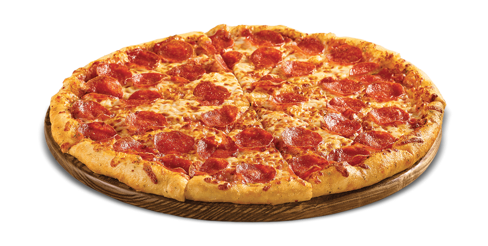

Here is a photograph of the beach, a place I will never get tired of.

Pizza is a food that can can unite most people (unless you hate pizza then... that's awk) Ariel, a mermaid in the classic Disney movie, The Little Mermaid, is shown gladly going to bed, a pastime I am very fond of.